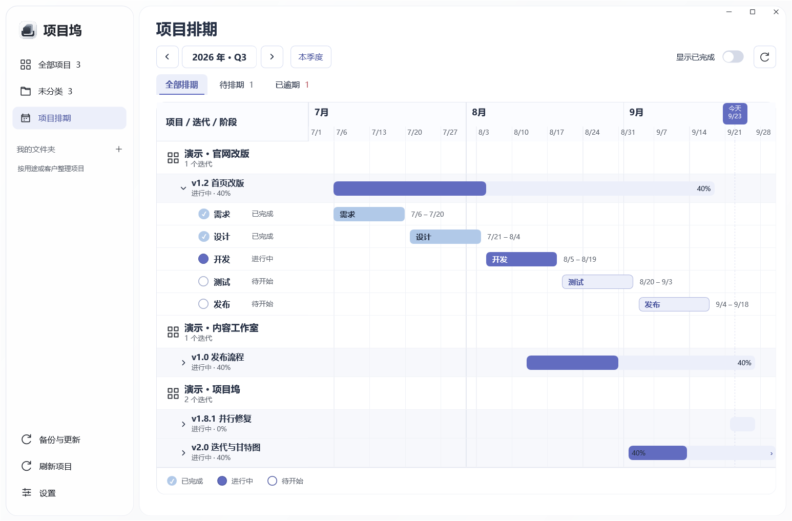

01 / 整理项目
给每个想法，一个位置。
用封面辨认项目，用文件夹整理工作。网站、代码仓库和部署入口集中在一起，需要时随手打开。
STUDIO
NOTES.
NOTES.
内容工作室进行中
THE NEXT
CHAPTER
CHAPTER
官网改版进行中
PROJECT DOCK
我的小工具已上线
从灵感到上线，把项目、迭代与排期
放进一个清爽的桌面工作区。
Windows 10 / 11 无需注册账户 Mac 版状态

少一点切换，多一点专注
几个并行的项目，也可以有条不紊。
把分散的信息整理好，再把精力留给创造。
用封面辨认项目，用文件夹整理工作。网站、代码仓库和部署入口集中在一起，需要时随手打开。
一个项目同时管理多个迭代。复用流程模板，独立跟进需求、设计、开发与发布，进度随阶段完成自动计算。
就在你的桌面上
无需注册。项目、封面与设置保存在本机，支持完整备份与恢复，换电脑也有章可循。
为开始和截止分别设置提醒。应用运行或留在托盘时检查排期，完成的阶段不再打扰。
在应用内检查新版本，下载经过签名校验的安装包。升级前自动备份，保留已有项目。
把下一步，放到桌面上
选择你的系统，下载项目坞。
为你的 Windows 桌面准备就绪。
Windows 10 / 11 · .NET Framework 4.8 或更高版本
查看文件校验值{{MAC_DESCRIPTION}}
{{MAC_REQUIREMENT}}
关注版本发布不需要注册项目坞账号。项目整理、迭代编辑和排期查看都在本机完成。下载更新、打开网站，以及可选的平台数据查询需要联网。
正式版默认保存在 Windows 用户目录下的 AppData 中，与程序文件分开。可在“备份与更新”里导出完整备份。备份包含项目、封面和设置，不包含平台 Token。
{{MAC_FAQ}}
打开下载的 .exe 文件，按安装向导完成安装。之后可以在应用内“备份与更新”检查新版本。安装包尚未使用 Windows 商业代码签名证书；如系统提示发布者未验证，请先确认文件来自本页链接的正式发布，并核对校验值。
关闭窗口并留在托盘运行时会继续检查提醒。完全退出、关机或未启动应用时无法提醒；下次启动会补充未发送的提醒。可在设置中关闭后台运行。